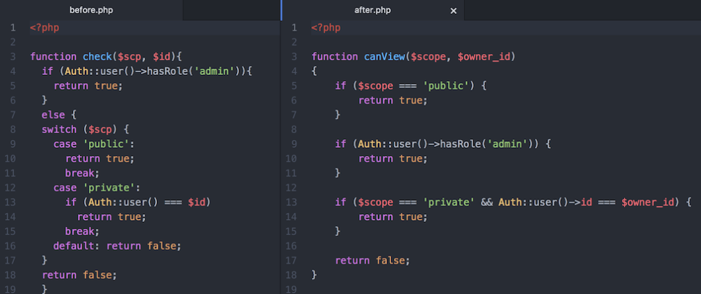
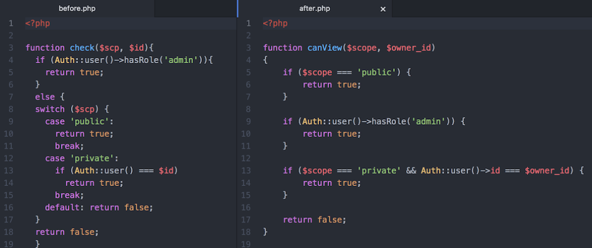
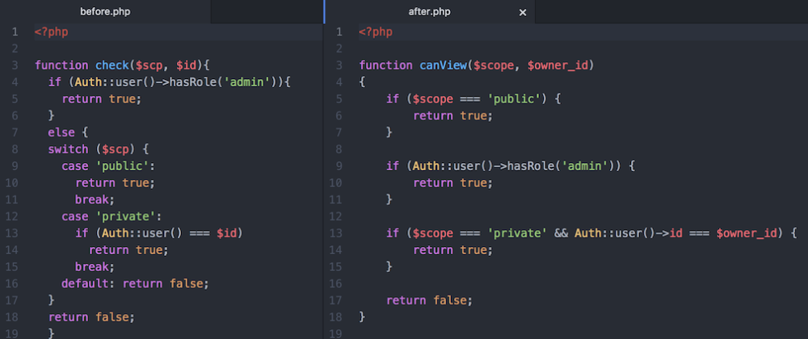

“ In order to be irreplaceable, one must always be different”
Hint 3:
The more you code, the more of me there is. I may be gone for now but you can’t get rid of me forever. What am I?
 


“ In order to be irreplaceable, one must always be different”
The more you code, the more of me there is. I may be gone for now but you can’t get rid of me forever. What am I?
